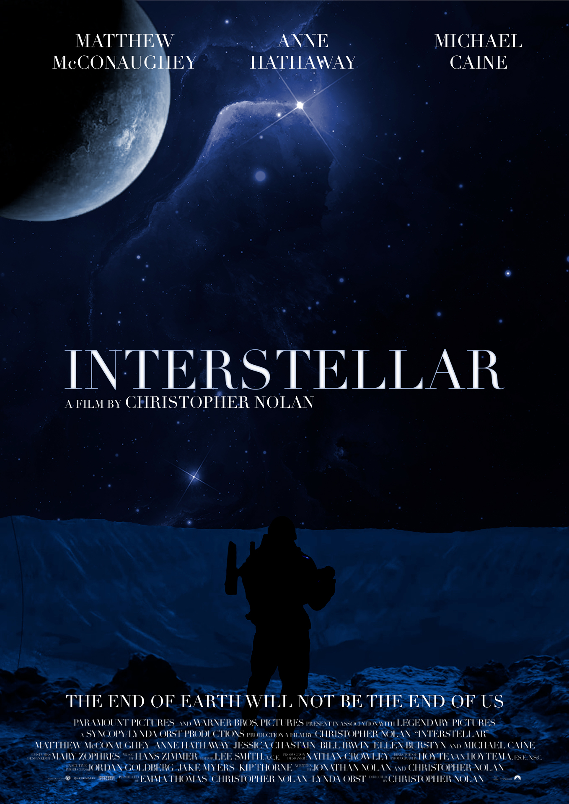

Interstellar
Cartaz do filme Interstellar. Criado no Photoshop e utilizando conceitos e técnicas das seguintes disciplinas:
-
Introdução ao Design Gráfico
Linguagem das cores baseado no tema abordado.
-
Tratamento de Imagem
Utilização do Photoshop, técnicas de brilho, contraste, matiz e saturação, dentre outras ferramentas do Photoshop